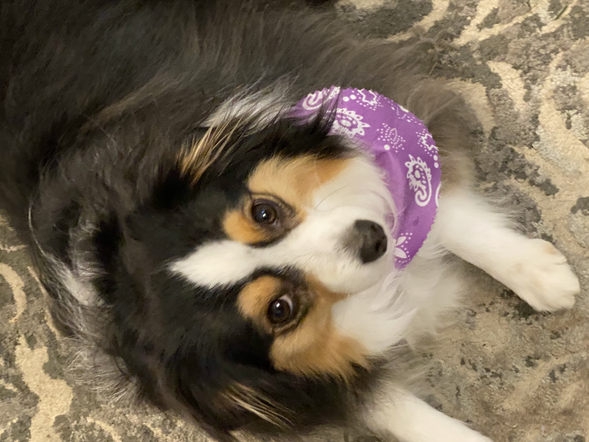
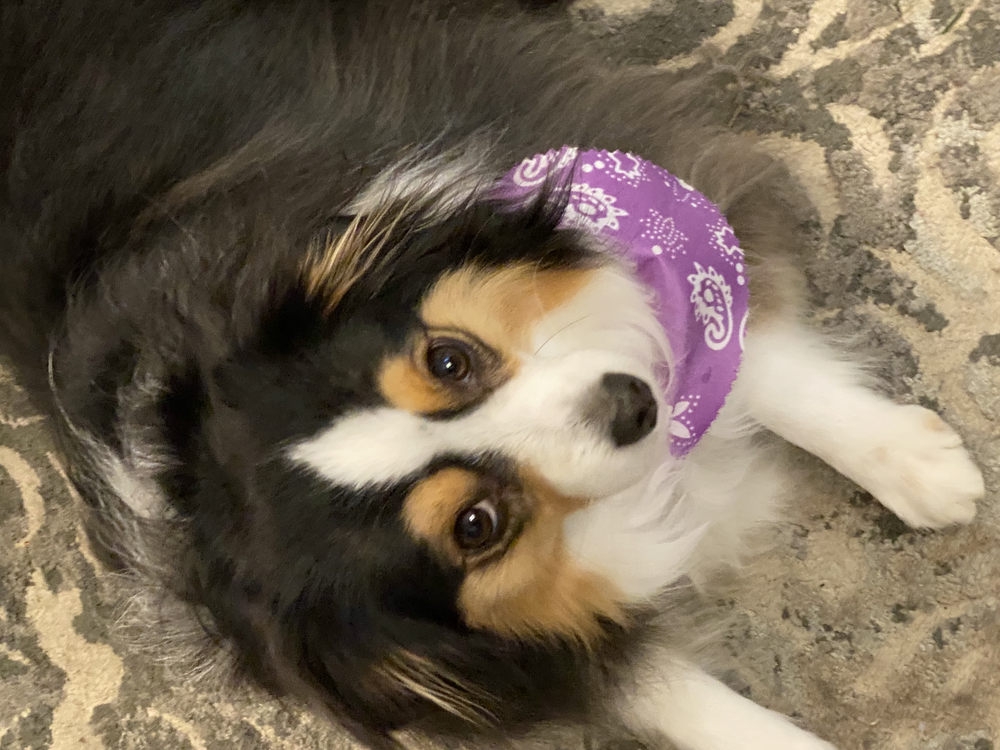

Sabella Volansky

Hi! My name is Sabella Volansky. I'm from New Milford, Connecticut. I'm a Dance Science
and Cinema and Television Arts double major at Elon University.
I'm also in the Accelerated Pathways Program for Physical Therapy here at Elon. This is a 3.5 year undergrad program that goes straight in to 3 more years of
grad school to get at phD.
I have been dancing since I was two years old but had scoliosis. I eventually got this corrected, and went through Physical Therapy to get back to dancing.
I realized that I wanted to help othr kids get back to doing what they love and I decided to become a Physical Therapist. I added the Cinema and Television Arts major last semester because
I realized that I also really like writing so I decided to work on those skills in my time in undergrad as well.

I danced for 15 years at a studio called Dance Dimensions and am continuing my dance journey here in college. I competed in dance competitions from the age of seven until the end of my senior year. My favorite style is tap, but I am also trained in ballet, modern, contemporary, hip hop and jazz. I assisted in teaching at the age of thirteen and by my senior year in high school, I was able to teach classes on my own.
My family is one of the most important things to me. I have a mom, a dad and a brother named Tyler. I also have a dog named Ruby. She is a toy Austrailian Sheppard. My family really likes to travel. we've gotten to visit Hawai'i, Alaska, Florida and Canada together. Another thing I like to do is bake. I love baking things completely from scratch. Some of my favorite things that I've made are cookies, macarons, croissants and waffles. My favorite type of music is pop music, and my favorite song is "This Side of Paradise," by Coyote Theory.
 
